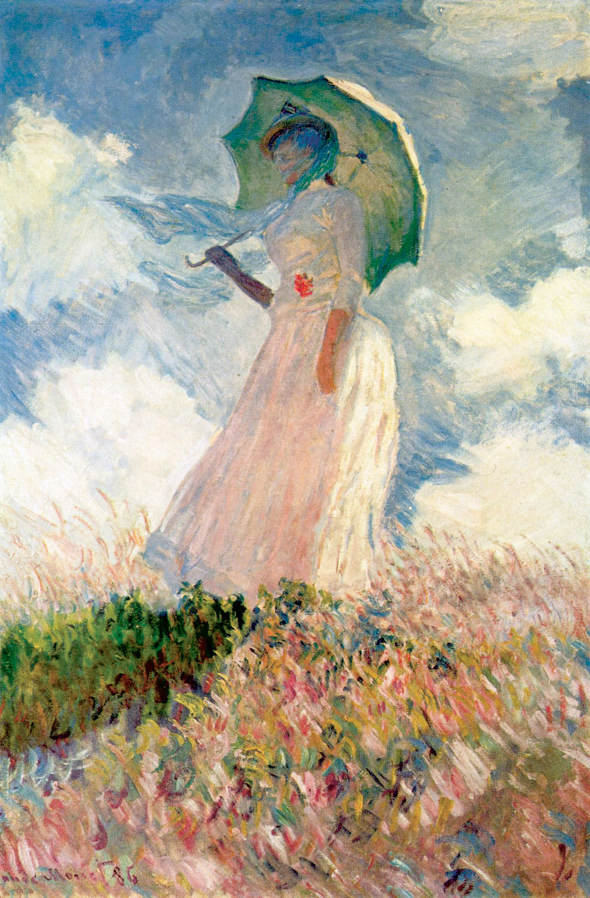
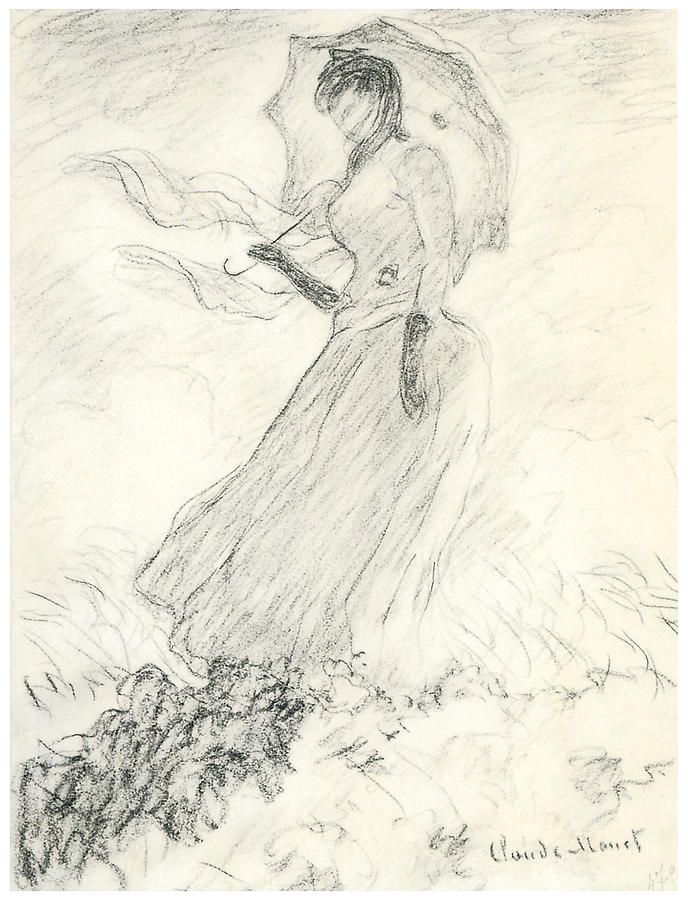
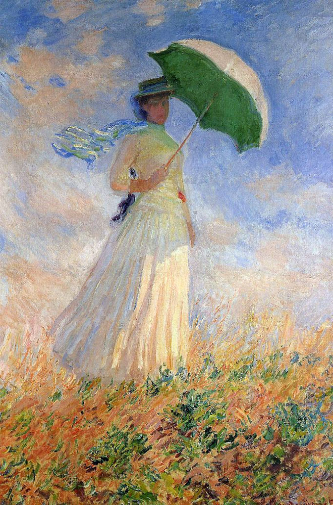

Woman with a Parasol – Madame Monet and Her Son, sometimes known as The Stroll (French: La Promenade) is an oil-on-canvas painting by Claude Monet from 1875. The Impressionist work depicts his wife Camille Monet and their son Jean Monet in the period from 1871 to 1877 while they were living in Argenteuil, capturing a moment on a stroll on a windy summer's day.[1]
Monet's light, spontaneous brushwork creates splashes of colour. Mrs Monet's veil is blown by the wind, as is her billowing white dress; the waving grass of the meadow is echoed by the green underside of her parasol. She is seen as if from below, with a strong upward perspective, against fluffy white clouds in an azure sky. A boy, Monet's seven-year-old son Jean, is placed further away, concealed behind a rise in the ground and visible only from the waist up, creating a sense of depth. Monet depicted the brevity of the moment using animated brush strokes full of vibrant color.
The work is a genre painting of an everyday family scene, not a formal portrait. The work was painted outdoors, en plein air, and quickly, probably in a single period of a few hours. It measures 100 × 81 centimetres (39 × 32 in), Monet's largest work in the 1870s, and is signed "Claude Monet 75" in the lower right corner.[1]
The painting was one of 18 works by Monet exhibited at the second Impressionist exhibition in April 1876, at the gallery of Paul Durand-Ruel. Ten years later, Monet returned to a similar subject, painting a pair of scenes featuring his second wife's daughter Suzanne Monet in 1886 with a parasol in a meadow at Giverny; they are in the Musée d'Orsay. John Singer Sargent saw the painting at the exhibition in 1876 and was later inspired to create a similar painting, Two Girls with Parasols at Fladbury, in 1889.
The painting is one of Monet's most recognizable and revered works and of impressionism as a whole.[2][3] Mary Mathews Gedo in Monet and His Muse: Camille Monet in the Artist's Life said that it was of "high quality" and had a "powerful impact".[4] artchive.com described it as a "masterpiece" that "triumphs wonderfully in conveying the sensation of a snapshot in time"[5] Mary Tompkins Lewis in Critical Readings in Impressionism and Post-Impressionism: An Anthology said it was "his largest and most imposing" painting of the decade, as well as it being "haunting, deeply introspective" [6] cmonetgallery.com viewed it to be "representative of Monet and impressionism in many ways" and that "Monet was looking at the world and depicting it in way that had not been done before."[3]
Monet sold the painting to Georges de Bellio in November 1876 Monet's Homeopath who was regularly paid in Monet's paintings. It was inherited by de Bellio's daughter Victorine and her husband Ernest Donop de Monchy, acquired by Georges Menier in Paris, and sold in 1965 to Paul Mellon and his wife Bunny Mellon.[7] He donated the painting to the National Gallery of Art in Washington, DC, in 1983.[7]

Monet, Woman with a Parasol, facing left, 1886

Sketch Drawing Of Woman with a Parasol, facing left, 1886

Monet, Woman with a Parasol, facing right, 1886
List of paintings by Claude Monet
Frida Kahlo
Red Pandas
^ a b "Woman with a Parasol – Madame Monet and Her Son". Retrieved December 1, 2019.
"ARTWORKS BY CLAUDE MONET". Retrieved December 3, 2019.
^ a b "Monet Woman with a Parasol – Madame Monet and Her Son". Retrieved December 1, 2019.
Gedo, Mary Mathews (30 September 2010). Monet and His Muse: Camille Monet in the Artist's Life. University of Chicago Press. ISBN 9780226284804. Retrieved December 1, 2019.
"Monet, Claude". Retrieved December 1, 2019.
Nord, Philip (15 March 2007). Critical Readings in Impressionism and Post-Impressionism: An Anthology. Univ of California Press. ISBN 9780520250222. Retrieved December 1, 2019.
^ a b "Woman with a Parasol – Madame Monet and Her Son by Claude Monet". June 6, 2018. Retrieved December 3, 2019.
Original source - Woman with a Parasol - Madame Monet and Her Son.